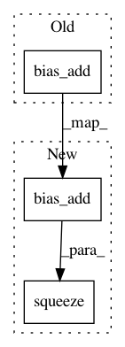

c330cc618b76a04c0f861102cfad2c73f1bc1c9a,open_seq2seq/parts/convs2s/conv_wn_layer.py,Conv1DNetworkNormalized,call,#Conv1DNetworkNormalized#Any#,79
Before Change
"CONSTANT",
)
output = tf.nn.bias_add(
tf.nn.conv1d(
value=x, filters=self.W, stride=1, padding=self.conv_padding,
),
self.b,
)
if self.decode_padding and self.kernel_width > 1:
output = output[:, 0:-self.kernel_width + 1, :]
After Change
output = tf.nn.conv1d(value=x, filters=self.W, stride=1, padding=self.conv_padding)
if self.b is not None:
output = tf.nn.bias_add(output, self.b)
if self.decode_padding and self.kernel_width > 1:
output = output[:, 0:-self.kernel_width + 1, :]
if self.apply_batch_norm:
// trick to make batchnorm work for mixed precision training.
// To-Do check if batchnorm works smoothly for >4 dimensional tensors
output = tf.expand_dims(output, axis=1) // NWC --> NHWC
output = tf.layers.batch_normalization(
name="batch_norm_" + str(self.layer_id),
inputs=output,
//gamma_regularizer=regularizer,
training=self.mode == "train",
axis=-1,
momentum=0.99,
epsilon=1e-4,
)
output = tf.squeeze(output, axis=1)
output = self.act_func(output)
return output
In pattern: SUPERPATTERN
Frequency: 3
Non-data size: 3
Instances
Project Name: NVIDIA/OpenSeq2Seq
Commit Name: c330cc618b76a04c0f861102cfad2c73f1bc1c9a
Time: 2018-07-24
Author: vnoroozi@nvidia.com
File Name: open_seq2seq/parts/convs2s/conv_wn_layer.py
Class Name: Conv1DNetworkNormalized
Method Name: call
Project Name: snorkel-team/snorkel
Commit Name: 900e03a46c6a3aeaf6aa1c058f53979134061549
Time: 2017-04-17
Author: henry.ehrenberg@outlook.com
File Name: snorkel/learning/logistic_regression.py
Class Name: LogisticRegression
Method Name: _build
Project Name: snorkel-team/snorkel
Commit Name: 900e03a46c6a3aeaf6aa1c058f53979134061549
Time: 2017-04-17
Author: henry.ehrenberg@outlook.com
File Name: snorkel/learning/logistic_regression.py
Class Name: SparseLogisticRegression
Method Name: _build